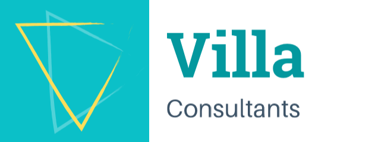

SAP consulting with strong industrial and operational experience.
VillaConsultants is a Montreal-based SAP consulting company led by Daniel Villamizar, M.Eng., PMP. We support organizations in asset management, maintenance, manufacturing and procurement by combining practical SAP expertise with real knowledge of industrial operations.
Daniel brings 15+ years of SAP experience across SAP PM, PP, MM and CS, with projects delivered in manufacturing, mining, rail transportation and public-sector environments.
- SAP S/4HANA
- SAP PM
- SAP PP
- SAP MM
- Montreal, Canada


About Daniel Villamizar
Daniel Villamizar is a Senior SAP Consultant and engineering professional based in Montreal. He has more than 15 years of SAP consulting experience, backed by extensive experience in industrial maintenance, reliability, asset management and process optimization.
His professional background combines SAP functional consulting with practical industrial knowledge. This experience allows him to understand both technical system requirements and the operational needs of the organizations he supports.
Throughout his career, Daniel has contributed to SAP implementations, rollouts, integrations, testing, data migration, user training, stabilization and continuous improvement.
Through VillaConsultants, he provides SAP consulting services focused on practical solutions and business results.
Professional Profile
Government of Canada — Secret level
Our SAP Expertise
VillaConsultants provides SAP consulting expertise combining enterprise technology, industrial operations and business process improvement.
SAP Asset Management
SAP Plant Maintenance (PM), preventive and corrective maintenance, equipment management, functional locations, maintenance plans, asset management and reliability processes.
SAP Manufacturing
SAP Production Planning (PP), manufacturing processes, MRP, master data management, production planning and integration with maintenance and materials management.
SAP Procurement & Materials
SAP Materials Management (MM), sourcing and procurement, inventory management, master data, purchasing processes and integration with plant maintenance.
SAP Implementation & Integration
SAP ECC and S/4HANA implementation, rollout projects, fit-gap analysis, business workshops, functional configuration, interfaces, data migration, testing and hypercare.
Maintenance & Reliability
Preventive and corrective maintenance, Total Productive Maintenance (TPM), Reliability-Centered Maintenance (RCM), continuous improvement and operational efficiency.
Project Leadership
SAP workstream coordination, cross-functional collaboration, project management, business process optimization, training and deployment support.
Selected Clients & Companies
Daniel has contributed to SAP projects involving organizations across several industries in Canada and internationally.
Organizations listed reflect professional project experience and do not necessarily represent direct clients or endorsements of VillaConsultants.
Industries Served
Experience across a range of industries, combining SAP expertise with a practical understanding of maintenance, manufacturing and operational processes.
Selected Project Experience
SAP Manufacturing Lead PP-PM-QM
Yoplait Liberté / Accenture
Leading SAP manufacturing workstreams for the rollout of a global template, covering production, maintenance and quality processes.
SAP Production Planning Lead
Building Products of Canada
SAP PP configuration, rollout, data migration, functional testing and end-user training.
Senior SAP Plant Maintenance Consultant
SAAQ / LGS
SAP PM configuration, custom enhancements, Fiori applications, data conversion, testing and user support.
SAP PP/PM/MM Integrator
STM / Beyond Technologies
Integration of maintenance, materials management and procurement processes.
SAP PM Integration Architect
Glencore / Beyond Technologies
Integration of SAP PM and MM with Coupa procurement solutions.
SAP PM Consultant
Saputo / IBM Canada
SAP implementation and rollout supporting manufacturing and maintenance processes across multiple international locations.
Education & Certifications
Education
M.Sc. in Engineering Management
Université de Sherbrooke
B.Sc. in Mechanical Engineering
National University of Táchira
Professional Credentials
Engineer — Ordre des ingénieurs du Québec
Project Management Professional (PMP)
Six Sigma Green Belt
SAP Certifications
SAP S/4HANA Asset Management
SAP S/4HANA Production Planning and Manufacturing
SAP S/4HANA Cloud Private Edition, Sourcing and Procurement
Languages
English · French · Spanish
Let's Work Together
Looking for SAP consulting support, implementation expertise or help optimizing your business operations?
VillaConsultants is based in Montreal, Canada, and welcomes opportunities for SAP consulting projects and professional collaborations.